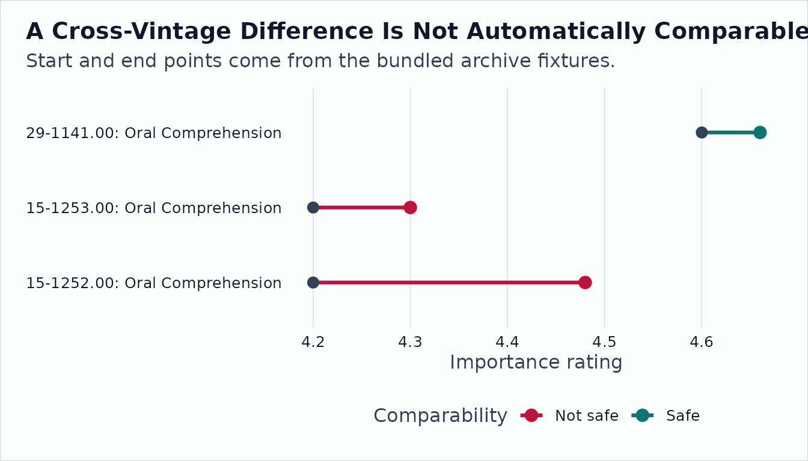

Longitudinal O*NET Archive Analysis
Source:vignettes/longitudinal-archives.Rmd
longitudinal-archives.RmdRead
vignette("longitudinal-onet-background", package = "onet2r")
before interpreting changes. O*NET was not designed as a longitudinal
panel, so the practical job is not only to compute differences. It is to
separate real descriptor updates from carryforwards, re-surveys with
stable values, recodes, transition rows, and taxonomy seams.
This walkthrough uses packaged archive-format text files so every
displayed table comes from onet2r functions while the
vignette remains CRAN-safe and does not require network access.
A Practical Question
Suppose you want to know whether selected cognitive ability ratings
changed between O*NET releases for occupations that matter in workforce
planning: software developers, registered nurses, chief executives, and
retail supervisors. A naive new - old difference is not
enough, because unchanged values may be carryforwards and changed values
may reflect a recode rather than a fresh survey update.
Read One Archive Table
onet_archive_read() reads an O*NET text archive table
and normalizes it into one panel schema.
abilities_303 <- onet_archive_read(
"30.3",
"Abilities",
path = example_archive("30.3"),
release_date = "2026-05-01"
)
abilities_303 |>
select(
release_version,
onet_soc_code,
soc_code,
element_id,
element_name,
data_value,
source_date,
domain_source
) |>
head(8) |>
onet_kable()| release_version | onet_soc_code | soc_code | element_id | element_name | data_value | source_date | domain_source |
|---|---|---|---|---|---|---|---|
| 30.3 | 15-1252.00 | 15-1252 | 1.A.1.a.1 | Oral Comprehension | 4.35 | 2025-07-01 | Analyst |
| 30.3 | 15-1252.00 | 15-1252 | 1.A.1.b.1 | Problem Sensitivity | 4.50 | 2024-07-01 | Analyst |
| 30.3 | 29-1141.00 | 29-1141 | 1.A.1.a.1 | Oral Comprehension | 4.71 | 2025-08-01 | Incumbent |
| 30.3 | 29-1141.00 | 29-1141 | 1.A.1.b.1 | Problem Sensitivity | 4.90 | 2024-08-01 | Incumbent |
| 30.3 | 11-1011.00 | 11-1011 | 1.A.1.a.1 | Oral Comprehension | 4.50 | 2025-07-01 | Incumbent |
| 30.3 | 11-1011.00 | 11-1011 | 1.A.1.b.1 | Problem Sensitivity | 4.22 | 2024-07-01 | Analyst |
| 30.3 | 41-1011.00 | 41-1011 | 1.A.1.a.1 | Oral Comprehension | 4.15 | 2025-06-01 | Analyst |
The output has one row per occupation, element, scale, and release.
The important longitudinal fields are release_version,
soc_vintage, onet_soc_code,
data_value, source_date, and
domain_source.
Assemble a Same-Vintage Panel
onet_panel() applies the same reader across releases and
row-binds the normalized outputs.
same_vintage_archives <- c(
`30.2` = example_archive("30.2"),
`30.3` = example_archive("30.3")
)
same_vintage_dates <- c(`30.2` = "2026-02-01", `30.3` = "2026-05-01")
panel <- onet_panel(
"Abilities",
versions = c("30.2", "30.3"),
scale = "IM",
archives = same_vintage_archives,
release_dates = same_vintage_dates
)
panel |>
arrange(onet_soc_code, element_id, release_version) |>
select(
release_version,
onet_soc_code,
element_name,
data_value,
source_date,
domain_source
) |>
head(10) |>
onet_kable()| release_version | onet_soc_code | element_name | data_value | source_date | domain_source |
|---|---|---|---|---|---|
| 30.2 | 11-1011.00 | Oral Comprehension | 4.38 | 2024-07-01 | Analyst |
| 30.3 | 11-1011.00 | Oral Comprehension | 4.50 | 2025-07-01 | Incumbent |
| 30.2 | 11-1011.00 | Problem Sensitivity | 4.22 | 2024-07-01 | Analyst |
| 30.3 | 11-1011.00 | Problem Sensitivity | 4.22 | 2024-07-01 | Analyst |
| 30.2 | 15-1252.00 | Oral Comprehension | 4.12 | 2024-07-01 | Analyst |
| 30.3 | 15-1252.00 | Oral Comprehension | 4.35 | 2025-07-01 | Analyst |
| 30.2 | 15-1252.00 | Problem Sensitivity | 4.50 | 2024-07-01 | Analyst |
| 30.3 | 15-1252.00 | Problem Sensitivity | 4.50 | 2024-07-01 | Analyst |
| 30.2 | 29-1141.00 | Oral Comprehension | 4.71 | 2024-08-01 | Incumbent |
| 30.3 | 29-1141.00 | Oral Comprehension | 4.71 | 2025-08-01 | Incumbent |
This is the table you would save as your audit trail before doing any modeling. It records the exact versions, values, and source dates used in the comparison.
Reconcile Adjacent Releases
onet_panel_reconcile() compares adjacent releases and
classifies each matched occupation-element-scale pair.
changes <- onet_panel_reconcile(panel, onet_crosswalk_bridge("2019", "2019"))
changes |>
select(
from_soc_code,
to_soc_code,
element_name,
from_value,
to_value,
value_change,
from_source_date,
to_source_date,
change_type,
method_break,
safely_comparable
) |>
arrange(desc(abs(value_change))) |>
head(10) |>
onet_kable()| from_soc_code | to_soc_code | element_name | from_value | to_value | value_change | from_source_date | to_source_date | change_type | method_break | safely_comparable |
|---|---|---|---|---|---|---|---|---|---|---|
| 29-1141 | 29-1141 | Problem Sensitivity | 4.60 | 4.90 | 0.30 | 2024-08-01 | 2024-08-01 | recode_or_recalc_flag | FALSE | FALSE |
| 15-1252 | 15-1252 | Oral Comprehension | 4.12 | 4.35 | 0.23 | 2024-07-01 | 2025-07-01 | real_update | FALSE | TRUE |
| 41-1011 | 41-1011 | Oral Comprehension | 4.00 | 4.15 | 0.15 | 2024-06-01 | 2025-06-01 | real_update | FALSE | TRUE |
| 11-1011 | 11-1011 | Oral Comprehension | 4.38 | 4.50 | 0.12 | 2024-07-01 | 2025-07-01 | real_update | TRUE | FALSE |
| 15-1252 | 15-1252 | Problem Sensitivity | 4.50 | 4.50 | 0.00 | 2024-07-01 | 2024-07-01 | stale_carryforward | FALSE | TRUE |
| 29-1141 | 29-1141 | Oral Comprehension | 4.71 | 4.71 | 0.00 | 2024-08-01 | 2025-08-01 | resampled_stable | FALSE | TRUE |
| 11-1011 | 11-1011 | Problem Sensitivity | 4.22 | 4.22 | 0.00 | 2024-07-01 | 2024-07-01 | stale_carryforward | FALSE | TRUE |
Read change_type before interpreting
value_change.
| Value changed? | Source date changed? | Classification | Interpretation |
|---|---|---|---|
| no | no | stale_carryforward |
The release likely carried forward the prior value. |
| yes | yes | real_update |
The value changed with a new source date. |
| no | yes | resampled_stable |
The occupation appears updated, but the score stayed stable. |
| yes | no | recode_or_recalc_flag |
Treat cautiously because the value changed without a new source date. |
changes |>
filter(value_changed) |>
mutate(abs_change = abs(value_change)) |>
arrange(safely_comparable, desc(abs_change)) |>
select(
to_soc_code,
element_name,
from_value,
to_value,
value_change,
change_type,
method_break,
safely_comparable
) |>
onet_kable()| to_soc_code | element_name | from_value | to_value | value_change | change_type | method_break | safely_comparable |
|---|---|---|---|---|---|---|---|
| 29-1141 | Problem Sensitivity | 4.60 | 4.90 | 0.30 | recode_or_recalc_flag | FALSE | FALSE |
| 11-1011 | Oral Comprehension | 4.38 | 4.50 | 0.12 | real_update | TRUE | FALSE |
| 15-1252 | Oral Comprehension | 4.12 | 4.35 | 0.23 | real_update | FALSE | TRUE |
| 41-1011 | Oral Comprehension | 4.00 | 4.15 | 0.15 | real_update | FALSE | TRUE |
Cross a Taxonomy Seam
Same-vintage comparisons are the easy case. The next example uses the bundled 2010-vintage and 2019-vintage fixtures. The bridge is intentionally tiny, but it shows the real problem: a 2010 occupation can split into more than one 2019 occupation.
cross_archives <- c(
`24.3` = example_archive("24.3"),
`25.1` = example_archive("25.1")
)
cross_dates <- c(`24.3` = "2020-08-01", `25.1` = "2020-11-01")
cross_panel <- onet_panel(
"Abilities",
versions = c("24.3", "25.1"),
scale = "IM",
archives = cross_archives,
release_dates = cross_dates
)
bridge_2010_2019 <- tibble::tibble(
from_vintage = "2010",
to_vintage = "2019",
from_onet_soc_code = c("15-1132.00", "15-1132.00", "29-1141.00"),
to_onet_soc_code = c("15-1252.00", "15-1253.00", "29-1141.00"),
map_type = c("split", "split", "one_to_one"),
crosswalk_weight = c(0.5, 0.5, 1)
)
cross_changes <- onet_panel_reconcile(cross_panel, bridge_2010_2019)
cross_changes |>
select(
from_onet_soc_code,
to_onet_soc_code,
element_name,
change_type,
crosswalk_uncertain,
transition_data,
safely_comparable
) |>
onet_kable()| from_onet_soc_code | to_onet_soc_code | element_name | change_type | crosswalk_uncertain | transition_data | safely_comparable |
|---|---|---|---|---|---|---|
| 15-1132.00 | 15-1252.00 | Oral Comprehension | transition_data | TRUE | TRUE | FALSE |
| 15-1132.00 | 15-1253.00 | Oral Comprehension | transition_data | TRUE | TRUE | FALSE |
| 29-1141.00 | 29-1141.00 | Oral Comprehension | real_update | FALSE | FALSE | TRUE |
| 15-1132.00 | 15-1252.00 | Problem Sensitivity | dropped | TRUE | FALSE | FALSE |
| 15-1132.00 | 15-1253.00 | Problem Sensitivity | dropped | TRUE | FALSE | FALSE |
plot_changes <- cross_changes |>
filter(!is.na(from_value), !is.na(to_value)) |>
mutate(
comparison = paste(to_onet_soc_code, element_name, sep = ": "),
comparability = if_else(safely_comparable, "Safe", "Not safe")
)
ggplot2::ggplot(plot_changes, ggplot2::aes(y = comparison)) +
ggplot2::geom_segment(
ggplot2::aes(
x = from_value,
xend = to_value,
yend = comparison,
color = comparability
),
linewidth = 1.1
) +
ggplot2::geom_point(
ggplot2::aes(x = from_value),
color = onet2r_colors[["slate"]],
size = 2.8
) +
ggplot2::geom_point(
ggplot2::aes(x = to_value, color = comparability),
size = 3.2
) +
onet2r_discrete_color(name = "Comparability") +
ggplot2::labs(
title = "A Cross-Vintage Difference Is Not Automatically Comparable",
subtitle = "Start and end points come from the bundled archive fixtures.",
x = "Importance rating",
y = NULL
) +
onet2r_theme()
Summarize the Panel
onet_change_summary() gives a compact audit of the
reconciliation result. The job-family view is useful for spotting
whether one part of the SOC taxonomy is driving the apparent change.
onet_change_summary(changes, by = "job_family") |>
onet_kable()| summary_level | job_family | change_type | n_pairs | share_pairs | mean_value_change | median_abs_value_change | share_safely_comparable | share_method_break | share_crosswalk_uncertain |
|---|---|---|---|---|---|---|---|---|---|
| overall | NA | real_update | 7 | 1.000 | 0.114 | 0.120 | 0.714 | 0.143 | 0 |
| job_family | 11 | stale_carryforward | 2 | 0.286 | 0.060 | 0.060 | 0.500 | 0.500 | 0 |
| job_family | 15 | stale_carryforward | 2 | 0.286 | 0.115 | 0.115 | 1.000 | 0.000 | 0 |
| job_family | 29 | resampled_stable | 2 | 0.286 | 0.150 | 0.150 | 0.500 | 0.000 | 0 |
| job_family | 41 | real_update | 1 | 0.143 | 0.150 | 0.150 | 1.000 | 0.000 | 0 |
Recommended Workflow for Real Archive Work
- Use
onet_releases()to identify release versions and O*NET-SOC vintages. - Build a panel with
onet_panel()for one domain at a time, such as"Abilities","Skills", or"Work Activities". - Build a bridge with
onet_crosswalk_bridge()when releases use different O*NET-SOC vintages. - Reconcile with
onet_panel_reconcile(). - Filter, weight, or model only after checking
change_type,method_break,crosswalk_uncertain, andsafely_comparable.